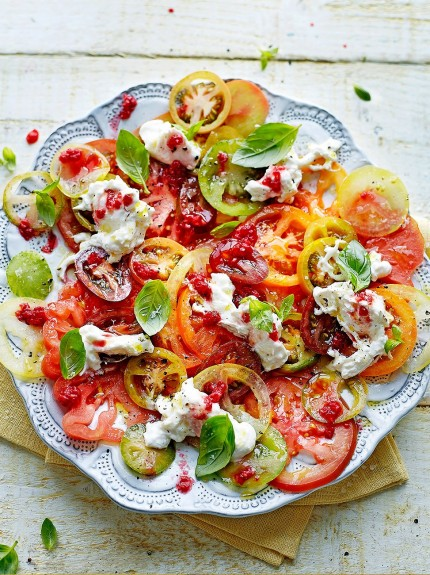
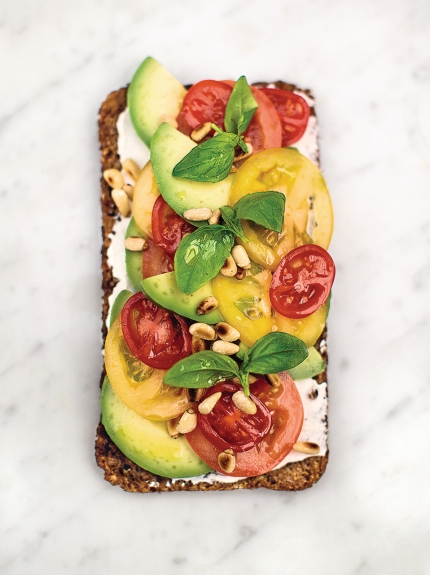
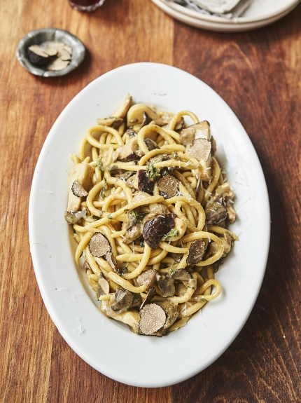
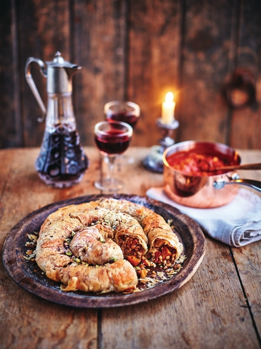
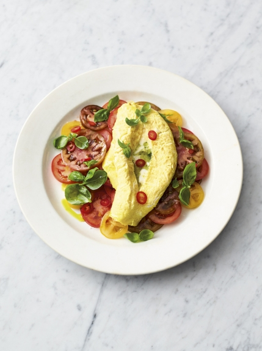
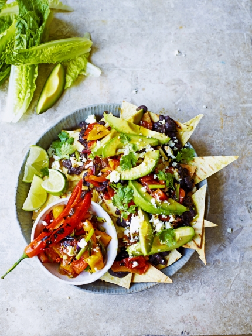

Tomato carpaccio
Ingradients
- 8 ripe heirloom tomatoes , sliced
- Extra-virgin olive oil
- 85 g raspberries
- 2 x 125 g burrata , or good quality
- mozzarella, torn
- A handful of small basil leaves
- Raspberry vinegar
Avocado on rye toast
Ingradients
- 1 heaped teaspoon ricotta cheese
- 1 x 75 g slice of rye bread
- ½ a ripe avocado
- 1 ripe tomato
- 1 lemon
- 1 teaspoon toasted pine nuts
- 1 sprig of fresh basil , optional
Jensen's Umbrian pasta
Ingradients
- 1 x royal pasta dough
- Tipo 00 flour , for dusting
- 2 cloves of garlic
- 3 fresh porcini mushrooms
- 1 whole Umbrian truffle
- extra virgin olive oils
- 2 sprigs of fresh thyme
- 2 anchovy fillets in oil
Method
Recipe by Greg Marchand
1. Arrange the tomato slices on a plate. Season with salt, pepper and olive oil.
2. Douse the raspberries with a drizzle of raspberry vinegar and crush with a fork. Top the tomatoes
with the torn burrata, drizzle over the raspberry dressing and scatter with basil to serve.
Method
Spread the ricotta cheese over the rye bread or toast.
1. Finely slice the avocado and tomato, then toss with a squeeze of lemon juice.
2. Season to taste and arrange on the toast.
3.Sprinkle over the pine nuts and a few fresh baby basil leaves, if you’ve got them.
Method
Make the royal pasta dough, saving half for another day.
Once rested, simply tear off 1cm balls of pasta dough and roll them out into 30cm very thin sausage
shapes on a clean surface (this pasta shape is called pici), then place on a floured tray.
Put a large pan of salted water on to boil, ready for the pasta. Once boiling, peel and add the whole
garlic cloves, scooping them out after 2 minutes (this will make the garlic creamy), then finely chop.
Quarter the porcini mushrooms, then halve and finely slice the truffle.
Vegan m'hanncha
Ingradients
- 100 g pearl barley
- 1 butternut squash , (1.2kg)
- 85 g raspberries
- 2 red onions
- 2 cloves of garlic
- 1 heaped teaspoon fennel seeds
- icing sugar , for dusting
Scrambled egg omelette
Ingradients
- 350 g ripe mixed-colour tomatoes
- ½ a bunch of fresh basil (15g)
- ½-1 fresh red chilli
- ½ x 125 g ball of mozzarella
- 4 large free-range eggs
Mega veggie nachos
Ingradients
- 2 mixed-colour peppers
- 1 fresh red chilli
- 3 ripe tomatoes , on the vine
- 6 spring onions
- 1 bunch of fresh coriander
- 2 limes
- 4 corn tortillas
- Chipotle Tabasco sauce
Method
Cook the pearl barley according to the packet instructions, then drain.
Wash the squash, then carefully cut it in half lengthways and remove the seeds. Peel the onions and garlic, and deseed the peppers. Chop the squash, onions and peppers into 1cm dice. Finely chop the garlic with the coriander stalks (reserving the leaves).
Method
Finely slice the tomatoes, arrange over a sharing platter, then dress with a little extra virgin olive oil, red
wine vinegar, sea salt and black pepper. Pick most of the basil leaves into a pestle and mortar, pound with a pinch of salt into a paste,
then muddle in 1 tablespoon of extra virgin olive oil to make a basil oil.
Method
Place the oven on to 180ºC/350ºF/gas 4.
Place a griddle pan over a high heat and cook the whole peppers, chilli, tomatoes and trimmed spring onions until soft and charred.
Put the peppers and chilli in a bowl, cover with clingfilm and set aside for 5 minutes.
Dice the tomatoes and spring onions, then add to another bowl. Peel, deseed and dice the peppers and chillies, then add to the tomatoes and spring onions.